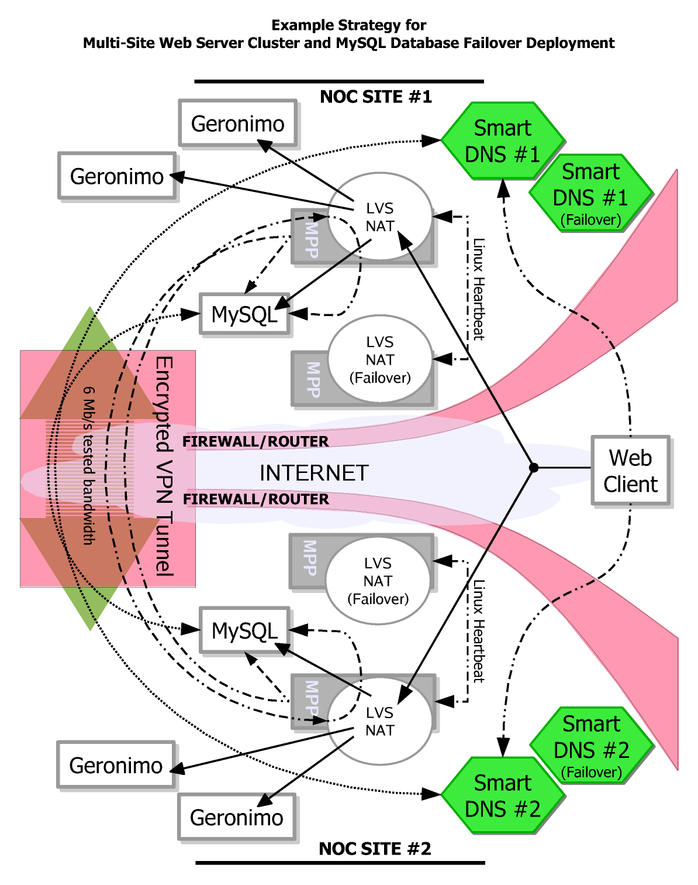

The technology available today for pooling multiple instances of MySQL into a cluster or
failover solution is listed below.
The solutions are listed as they are to provide a brief summary. It is not intended to
take the place of the information on the project software's web site. You should become
aware of all these clustering/failover solutions because they are all really great solutions.
It is important that you be informed about the options out there, and choose one that fits
your need for MySQL server deployment.
It is also possible to combine any or all of these technologies together to
create another possible unique solution which may be useful.
- MySQL NDB Clustered Storage Engine
http://dev.mysql.com/doc/refman/5.1/en/mysql-cluster-overview.html
http://www.mysql.com/products/database/cluster
- Developed by MySQL AB for the MySQL Server, this solution is entirely memory based and differs entirely from the traditional disk based MySQL Storage Engines.
- An advantage is that this is maintained and Supported by the MySQL Community, and is fast.
- A disadvantage is that the entirely memory based clustering enginer requires as much ram for each node as you plan to store in the database.
- Sequoia (Formerlly known as C-JDBC from ObjectWeb)
https://forge.continuent.org/projects/sequoia
- Developed originally by ObjectWeb, it has taken off as an Apache2 licensed solution now termed Sequoia. It is an entirely JDBC/ODBC solution for clustering JDBC/ODBC compliant database servers.
- An advantage is that this software is well tested and works seemlessly with existing web applications accessing databases via JDBC. It has monitoring, and fail-safe checking, plus more.
- Some disadvantages are that it is only for applications that can use JDBC or ODBC (or C++) which can now include non-java applications. This may not seem as much of a disadvantage, but if you are maintaining dozens of applications using JDBC/ODBC, your cluster configuration and management is maintained on a per application basis. So if you want to change your cluster configuration or the like, you have to change the configuration for all your applications using Sequoia. Even if someone were to write a centralized configuration directory (like using LDAP) where all applications get their configuration from that, the Clustering is still maintained on each single application basis.
- Linux Heartbeat / High Availability
http://www.linux-ha.org
- Linux Heartbeat which is part of the High-Availability Project is the traditional method used for configuring a failover scenerio. One server is the primary server taking requests. The second server is on standby receiving replication from the primary. Once the primary has a hardware failure and a heartbeat can no longer be detected by the secondary server, then the secondary server takes over the application IP and serves requests in the primary's place.
- The advantage is that this is a widely used and tested scenerio. It is the typical configuration for a failover people will have. Also, you need only have two servers with the installed heartbeat software.
- A disadvantage is that it is a one-server-up solution. The first server must come into error and be configured to give up use of the application IP to the secondary server. The High-Availability project is designed to do this.
- MPP (MySQL Pool-Poller) - This Solution
http://codepin.cait.org/project/mpp
- MPP is a MySQL State Manager. It is intended to be used in combination with any load balancing management software. It was primarily designed to be used in conjunction with Linux Virtual Server. This software allows the configuration of MySQL servers into a pool. The configured pool is managed based on a logic that is assigned to it. MPP currently supports Failover logic, and has intentions to eventually support Cluster logic.
- The advantage of this software is that it is a scenerio management application, managing a pool of MySQL servers in a non-implemented fashion. It allows itself to be plugged into any Load Balancing software that can make external calls to scripts or which can implement REST based plugins. The Load Balancing software is what executes the real implementation. So in theory, under an advanced Load Balancing configuration, MPP can be combined with several technologies to create a useful failover or cluster configuration.
- The disadvantage is that the code is fairly new as version 1.00.000, and needs to be well field tested by many deployments and then fine tuned. Although already field tested and proven to work, it is only in version 1 and still has room to grow.
- Continuent uni/cluster and m/cluster products (Commercial)
http://www.continuent.com/
- Continuent provides a product(s) to cluster mysql similar to a multi-node cluster with heartbeat. But is more sophisticated by replicating SQL modification statements to all nodes rather than rely on MySQL replication and controlling the failover strategy. This product specific to MySQL is termed m/cluster . It also provides a clustering technique similar to Sequoia termed uni/cluster .
- Certainly if you want a company backing your MySQL cluster who you can hold accountable, you may wish to choose their product.
Other useful information
- Linux Virtual Server
- Linux Virtual Server from UltraMonkey.org
- Red Hat Cluster Suite (a.k.a. Piranha) based on Linux Virtual Server
- How to Monitor MySQL Replication in Real Time with SNMP Using Linquine Watch
- Open QRM provides provisioning of the entire software stack on physical servers and virtual machines like VMware, Xen and Qemu. openQRM also has a policy engine so that resources can be provisioned based on external business needs and the requirements of internal organizations automatically.
* There is a fourth section for real server checkpoints. It is mainly used in a global collocation deployment and thus is not being covered in this section.The labels from the columns of data is defined as follows:
** The status of the pool which is seen on the second line in the illustration on the right will not be explained here. It is used in conjunction with server checkpoints used to determine the status of the local pool in a multi-site collation deployment.
yum search ipsec).
|
 |
|
{kind=link}